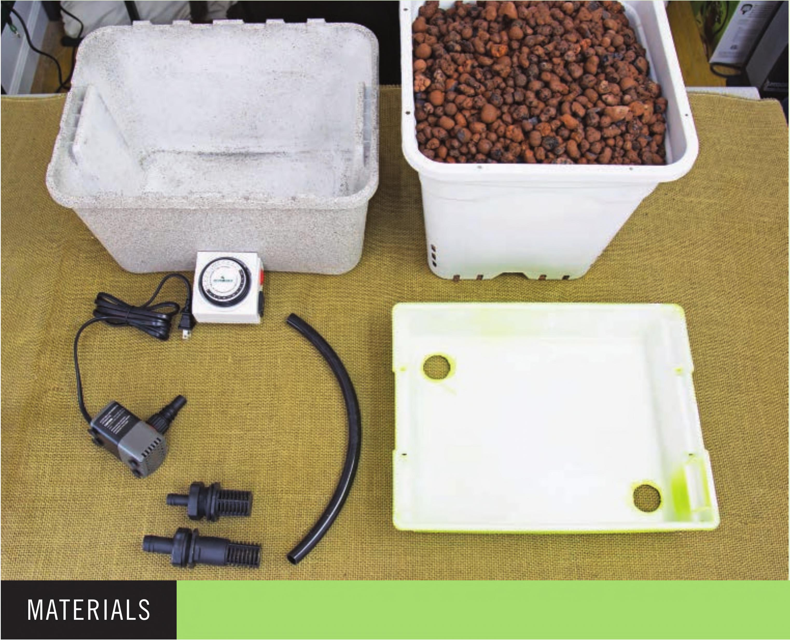

TOOLS HOW TO BUILD A MEDIA BED FAIRY GARDEN Drill Step drill bit with VC increments from VC to 1 3/8m Deburring tool Heavy-duty scissors Irrigation line hole punch (optional) Safety Equipment Work gloves Eye protection Reservoir and Grow Bed 1 14" Lx 11" Wx3V4" H plastic tote 1 14.7" L x 1 0.6" W x 9.1" H plastic tote (4 gal.) Scotch tape Chalkboard spray paint Irrigation 1 Fill/drain fitting combo kit: VC fill/drain fitting with screen Vi" fill/drain fitting with screen 14" V2" black vinyl tubing 1 Submersible water pump, 1 60 GPH 1 Timer Substrate 10 L Expanded clay pebbles Optional Waterwheel Addition 1 VC double barbed connector 3' VC black vinyl tubing 1 Waterwheel 1 VC shutoff valve 1 Zip tie 94 DIY HYDROPONIC GARDENS
